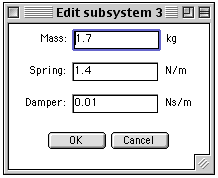

Instructions
This package allows you to investigate the forced
vibration response of an axial five degree-of-freedom system with
damping.
|
|
This indicates a rigid abutment. These
are fixed to earth and may be at either end of the
system.
|
|
|
This indicates a rigid mass and you will
be able to change the size of the mass in kg.
|
|
|
This indicates a massless spring and you
will be able to change its stiffness in N/m.
|
|
|
This indicates a viscous damper and you
will be able to change its coefficient in Ns/m.
|
|
|
This indicates the excitation force
position and you will be able to change its position by
clicking above the desired mass.
|
|
|
This indicates the measured displacement
position and you will be able to change its position by
clicking below the desired mass.
|
When the applet is loaded the system that is shown
looks like,
|

|
The response curve for this system is
shown as a graph. As a first experiment use the mouse to
move the X and F positions to see how the response
changes.
The animation shown under the response is
for the frequency shown by the blue line. This frequency can
be changed by dragging the line.
|
Changing a a spring/mass/damper
|

|
Use the mouse to select a
spring/mass/damper.
|
Changing parameter values.
|

|
When a spring/mass/damper is selected the
edit button will allow parameter values to be changed using
a dialogue box.
|
NOTE: Even though the excitation frequency is changed on the
graph the frequency of the animation is constant for ease of
viewing.